Voice Survivor / Orbit Ruins Lineglow Pass
Target route is the new root gameplay at http://127.0.0.1:5177/. The direction is now biased toward dark stone, luminous contour lines, self-glowing functional colors, and small-token readability rather than uniform brass-metal detail.
Open current runtimeSelected 04 Buff Showcase Direction


Production Source Sheets


Lineglow Concept Direction


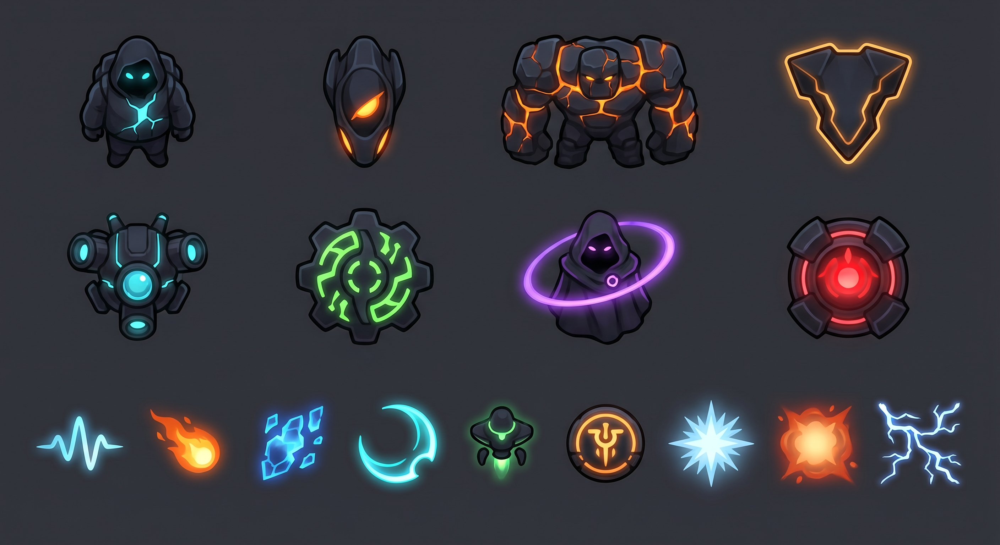

Simulated Gameplay Slices


Current Runtime Pass
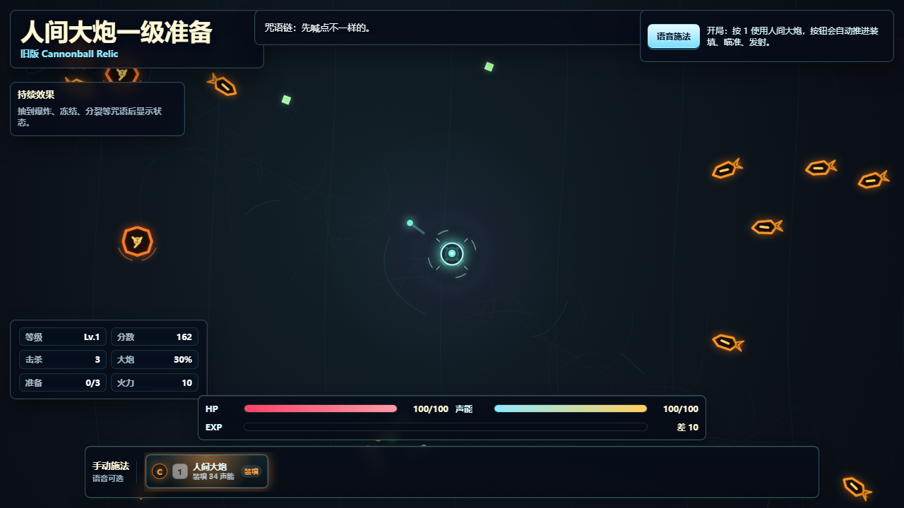
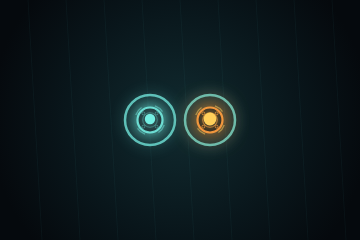

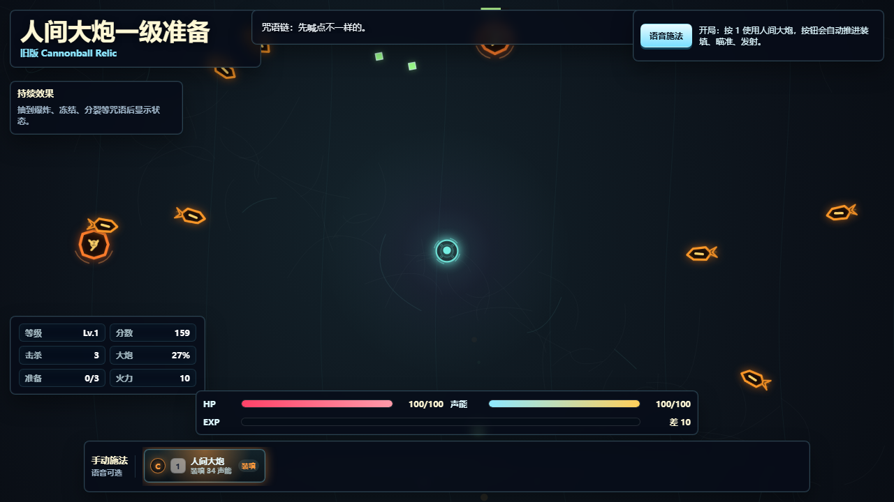
v6.3 Single Enemy Review
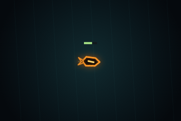
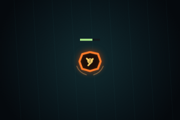
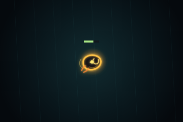
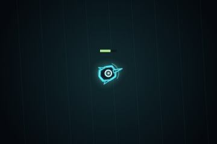
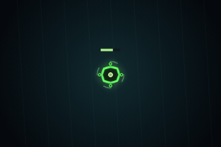
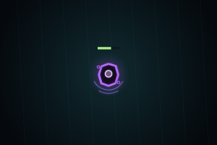
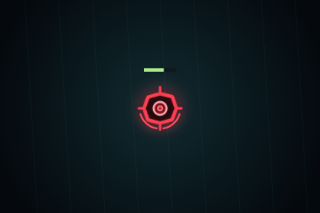
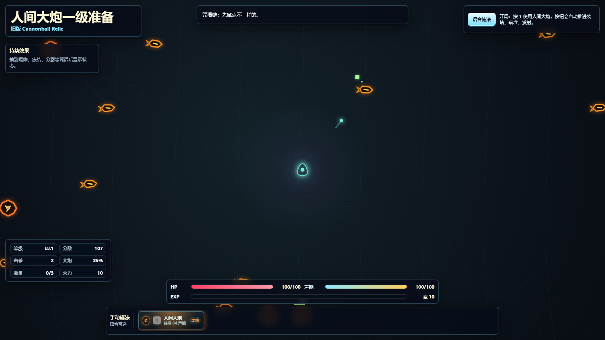

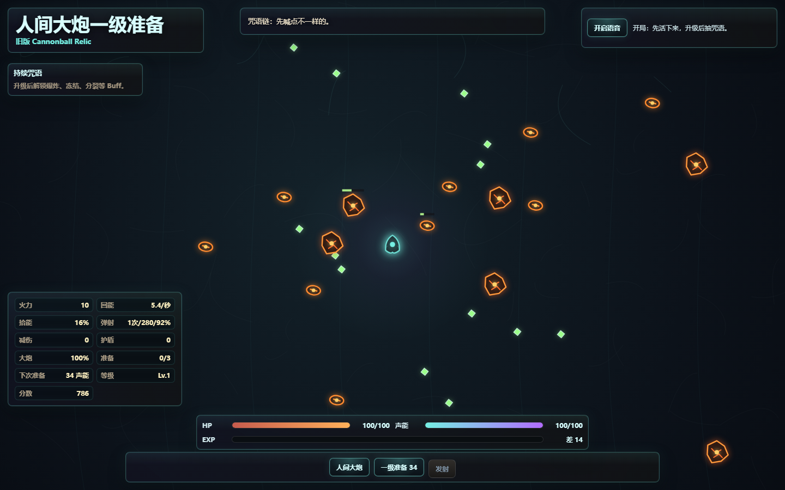
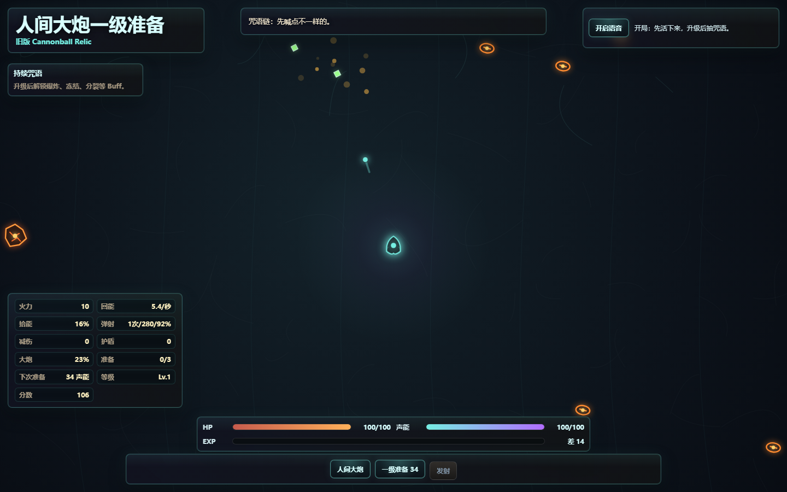
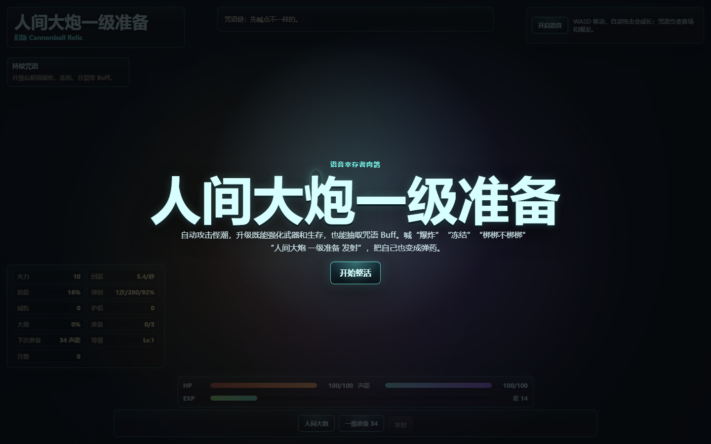
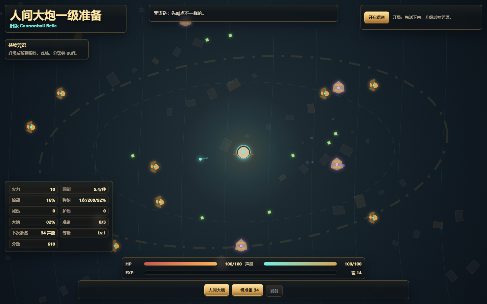
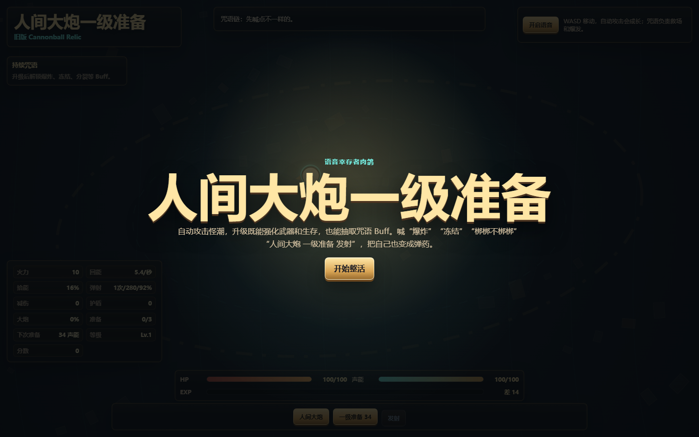
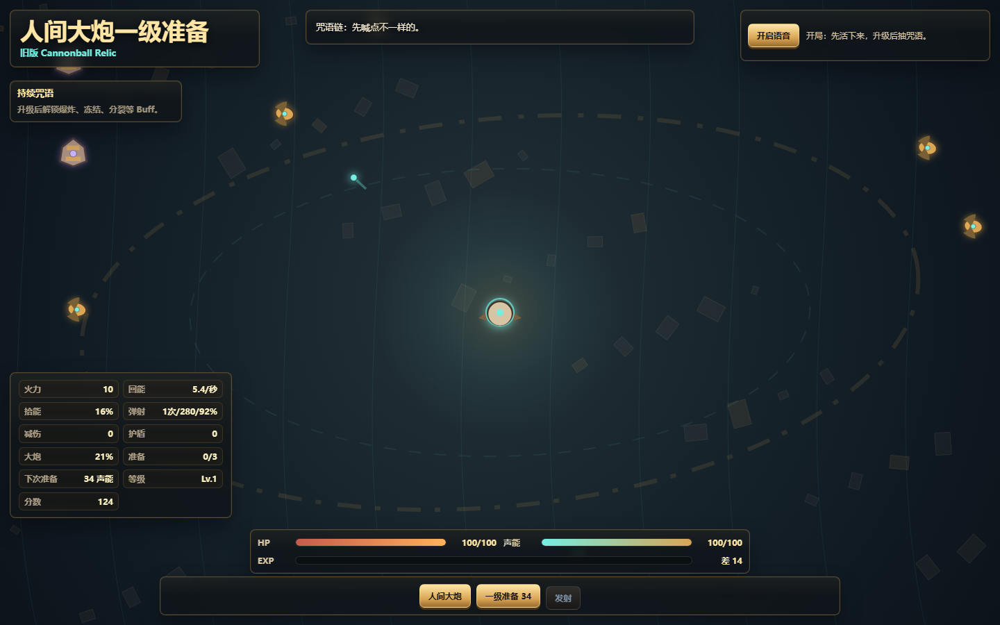
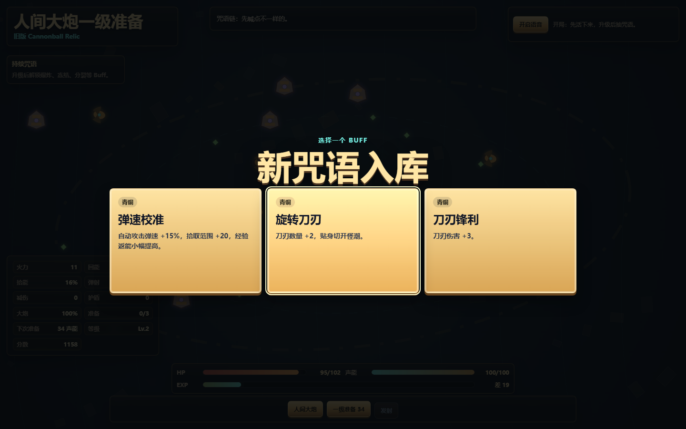
Direction Change
Move from uniform brass-metal detail to dark bodies with cyan, violet, orange, green, and red self-glow identities.
Player Rule
The player is a Buff expression container. Keep the body simple; put upgrades in outer rings, projectiles, pips, drones, and trails.
Enemy Rule
Most enemies are 26-32 px tokens under high density. Special enemies can be larger, but must read by silhouette and glow color.
Arena Rule
No implied oval island or fixed terrain edge. Treat each screenshot as one viewport over a larger continuous field.